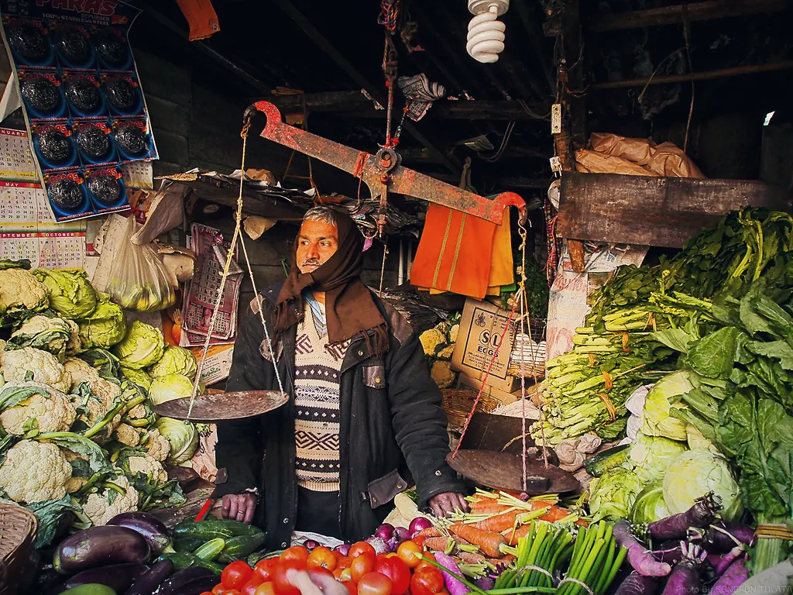
Corporate Solutions
Research, strategy and business transformation capabilities for organisations seeking sustainable market advantage.
- Research & Strategy
- Business Model Innovation
- Strategic Activation
- Rural Immersion Program
Corporate Solutions
Insight, strategy and activation for emerging markets.
Research, strategy and business transformation capabilities for organisations seeking sustainable market advantage.
Explore Corporate SolutionsExplore More
 Research & Strategy
Research & Strategy
Social Solutions
Implementation and impact, at scale.
Large-scale implementation and impact capabilities designed for communities, institutions and development programs.
Explore Social Solutions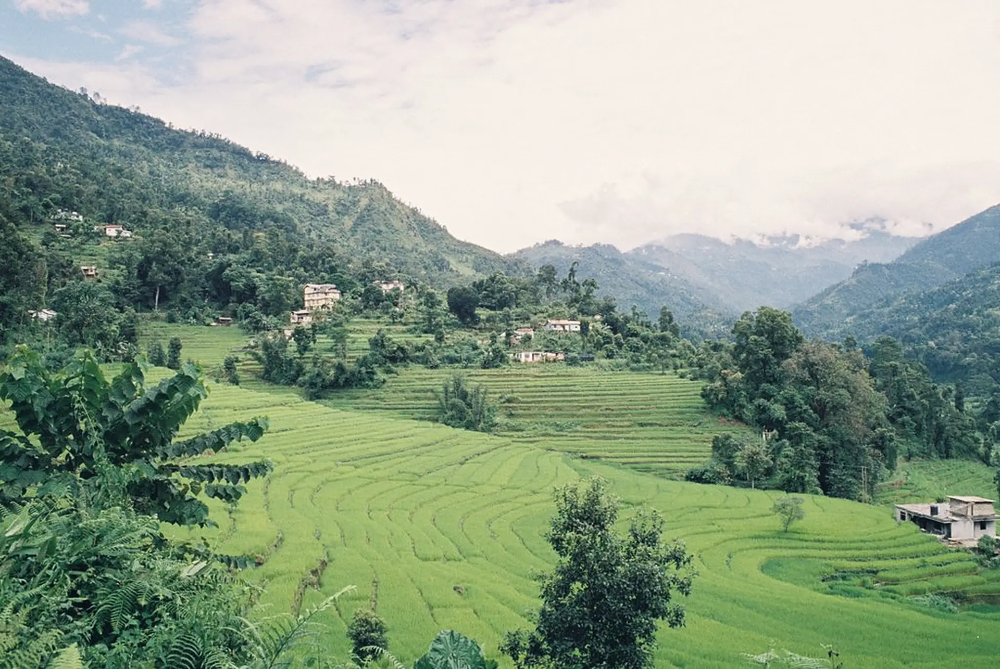
MART Global Est. 1993
For more than three decades, MART Global has helped businesses, governments and development organisations understand markets, design sustainable solutions and create measurable impact.
Find your direction
Explore MART Global’s capabilities and find the right solutions for your needs. Choose a direction — you can switch at any time.

Research, strategy and business transformation capabilities for organisations seeking sustainable market advantage.
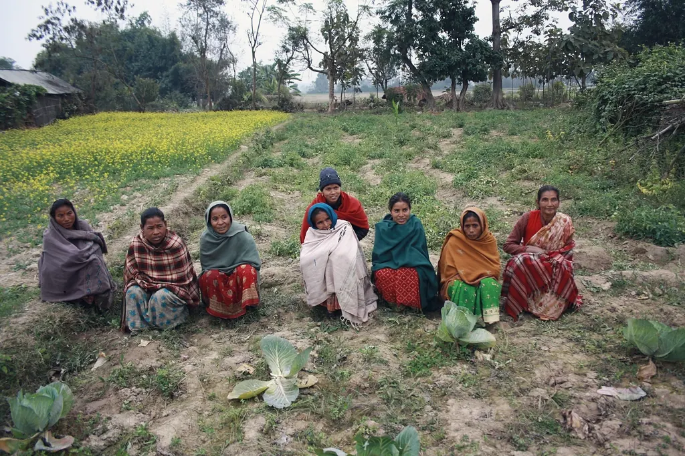
Large-scale implementation and impact capabilities designed for communities, institutions and development programs.
Select a direction to reveal tailored capabilities
Corporate Solutions
MART Global helps organisations understand markets, identify opportunities, build sustainable models and activate strategies across complex and emerging markets.
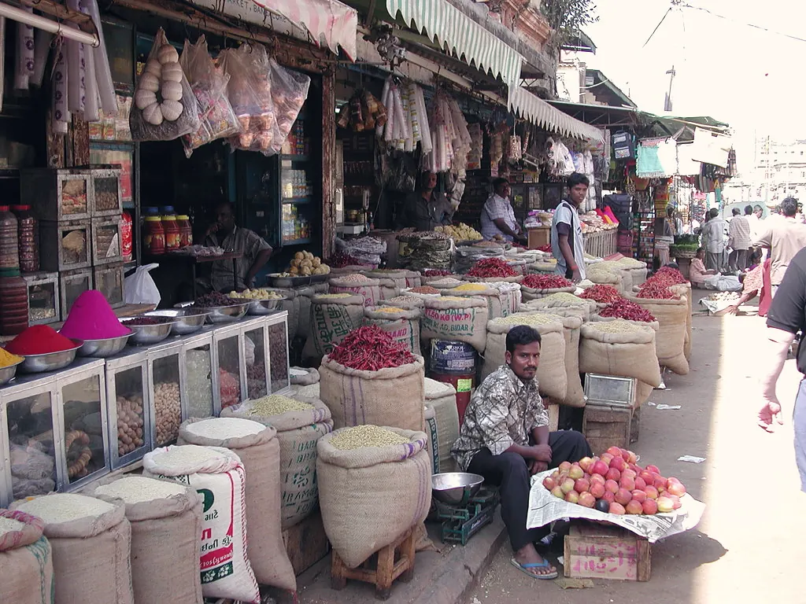
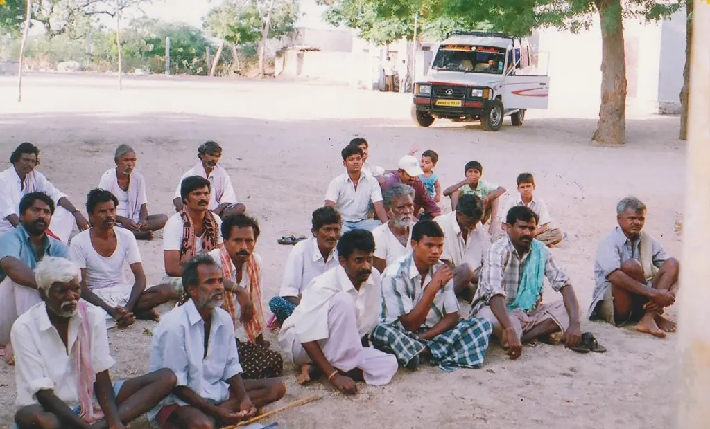
Our Capabilities
Each capability stands on its own — and each connects to the next, from the first field interview to a strategy in market.
The Strategic Journey
Most advisory work stops at the report. MART stays with the problem — from the first field interview to the moment a strategy begins to scale.
Understand consumers, channels and context — from the ground up.
Turn evidence into clear choices on where to play and how to win.
Design offers, models and channels that fit emerging markets.
Pilot, launch and activate — with MART teams in the field.
Scale what works and sustain the advantage over time.
Focus Areas
Three decades in India’s most complex markets have given us depth across the sectors that shape rural and emerging economies.
Agriculture
Input demand, farmer behaviour, crop economics and agricultural value chains.
Project Experience
Representative engagements across consumer, financial and agricultural markets.
View all projects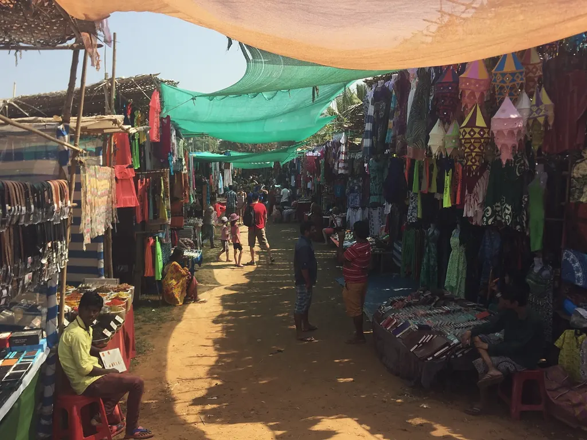
Consumer MarketsVillage-level demand mapping, retail network analysis and haat-cycle activation planning shaped a phased entry into new rural districts.
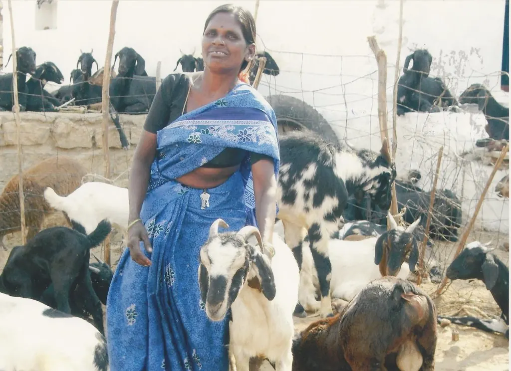
Financial InclusionHousehold research among low-income and women-led households informed product, channel and communication design.
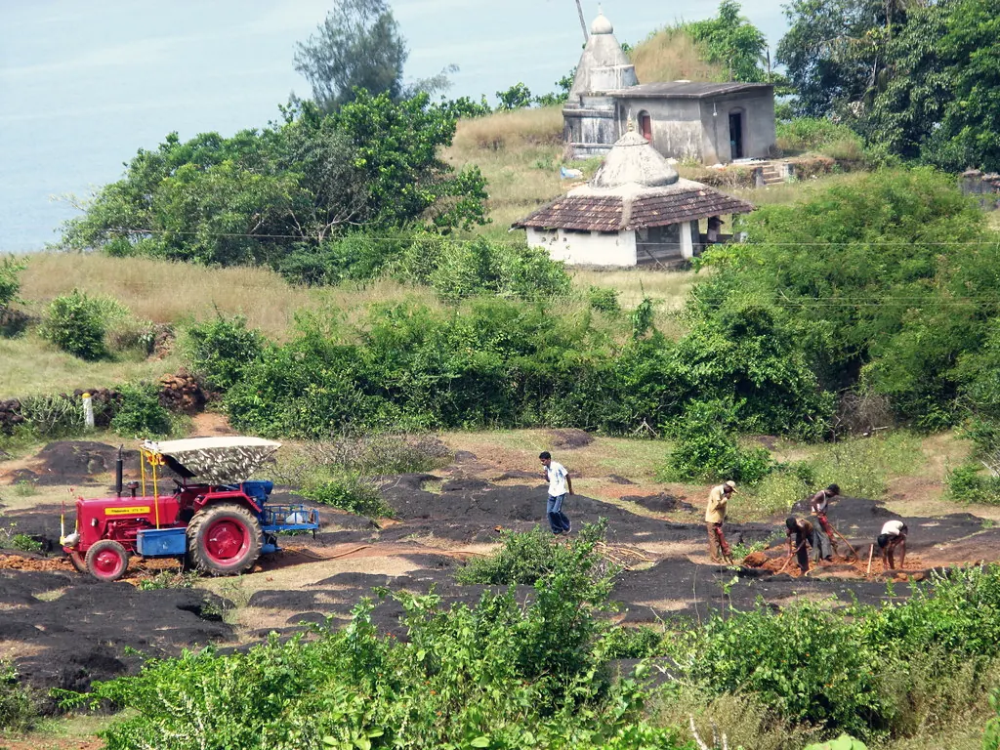
AgricultureFarmer purchase-behaviour studies and demand models guided launch geography, pricing and pack sizes.
Client names withheld. Engagement descriptions are representative of MART’s project experience.
We Also Provide
MART Global works as one ecosystem — so the insight behind your strategy can travel all the way to implementation.

Complex programs delivered through community participation, institutional partnerships and technology.
Explore
Purpose-led CSR strategy, program design, implementation and impact measurement.
Explore
Connecting producers and rural enterprises with buyers, value chains and new markets.
Explore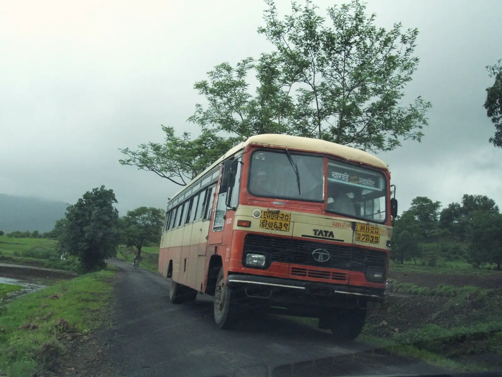
Work with us
Tell us about the market you want to understand, the decision you need to make, or the strategy you need to activate.
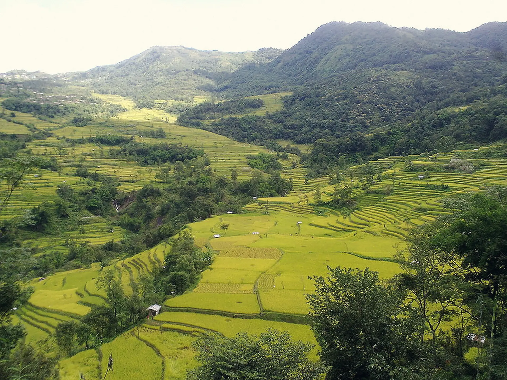
Implementation Philosophy
We measure our work not by the elegance of a plan, but by what changes in a village, a producer group or a household. That is why MART teams stay in the field — from the first community meeting to the final evaluation.
How Impact Compounds
Every program connects people to institutions, institutions to partners, and partners to markets — until the outcome can sustain itself.
Participation, ownership and local knowledge at the core of every program.
SHGs, producer groups, FPOs and local bodies that carry the work forward.
Governments, CSR partners and development agencies aligned around shared goals.
Buyers, value chains and services that turn new skills and assets into income.
Outcomes that endure — long after a program formally ends.
Impact Areas
Our programs work across the full fabric of rural life — income, institutions, ecology and access.
Farm, off-farm and non-farm income for vulnerable households.
Productivity, diversification, dairy, livestock and allied activities.
Women-led collectives, enterprise and decision-making.
SHGs, JLGs, producer groups and FPOs built to last.
Training, Training of Trainers and institutional strengthening.
Forest conservation, water and eco-development approaches.
Linkages to buyers, value chains and government schemes.
Digital tools, literacy, payments and program monitoring.
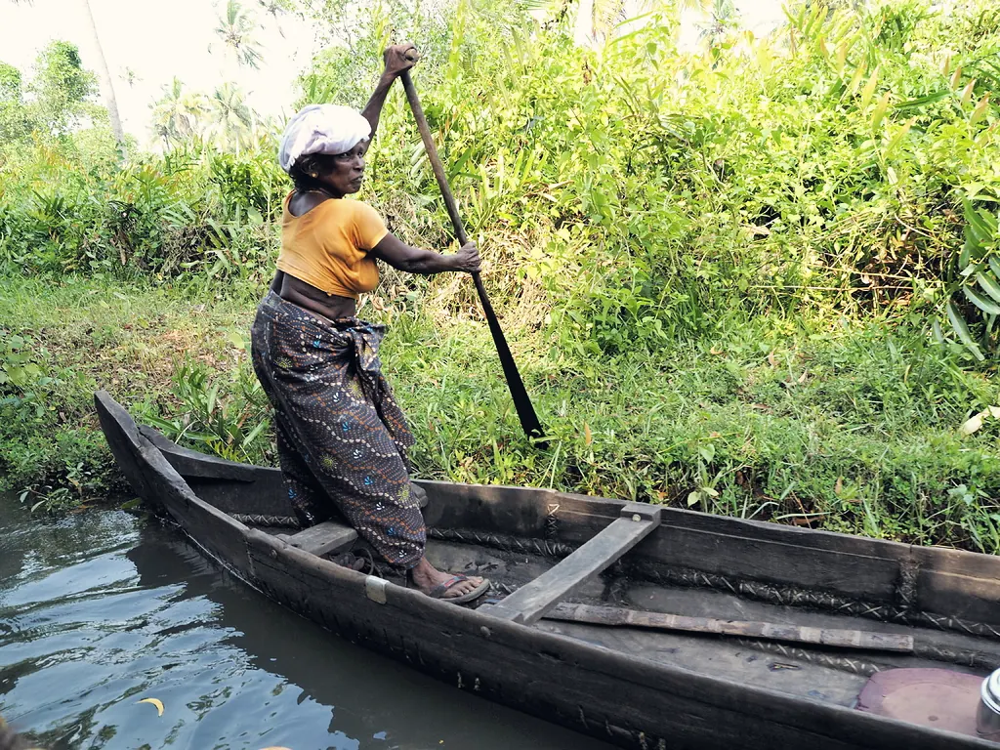
Field Story
In riverine and forest-fringe communities, income and environment are inseparable.
MART’s eco-development approach pairs livelihood augmentation with conservation — training community members, strengthening local institutions and connecting produce to markets, so that protecting natural resources also pays.
We Also Provide
Programs work better when they are built on evidence. MART’s research and strategy capabilities are available to every partner.

Baselines, market intelligence and strategic advisory to design better programs.
Explore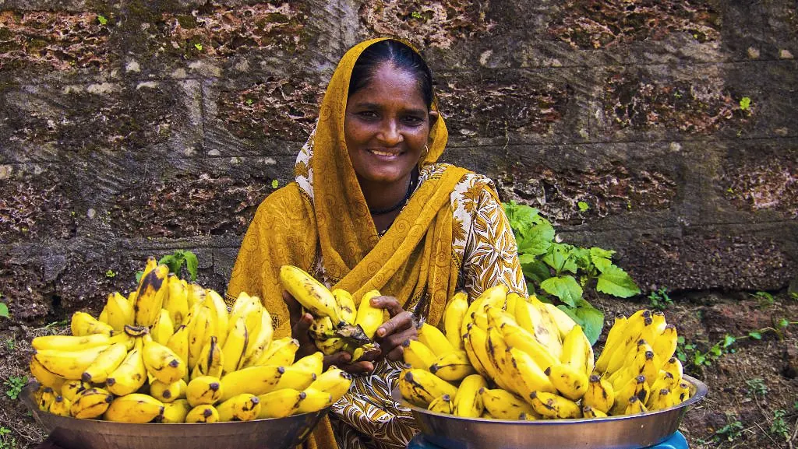
Sustainable enterprise models for producer groups, collectives and rural ventures.
Explore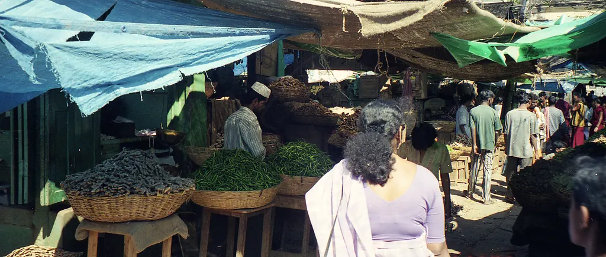
Launching and scaling initiatives on the ground, with the reach to make them work.
ExplorePartner with us
Whether you are designing a new program, scaling one that works, or looking for an implementation partner — we would like to hear from you.
About MART Global
Founded in 1993 by Pradeep Kashyap — widely regarded as a pioneer of rural marketing in India — MART set out to understand the markets others overlooked.
Today MART Global brings its corporate and social capabilities together as one ecosystem: research, strategy and activation for businesses; implementation and impact for communities, governments and development partners across India, South Asia and Africa.
Our Capabilities
Built for impact at scale.
Four capabilities that take programs from intent to institutions, markets and measurable results.
Large-Scale Program Implementation
Designing and delivering complex programs through community participation, institutional partnerships, market linkages and technology.
Explore the approachProject Management & Advisory
Program design, management support and monitoring for governments, donors and implementing agencies.
Learn more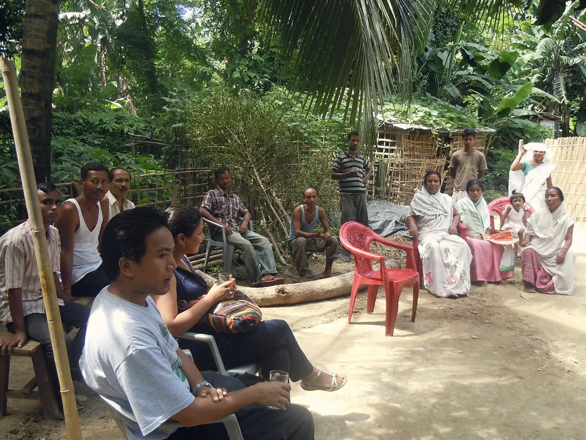
CSR Solutions
End-to-end CSR — from strategy and partner selection to implementation and impact assessment.
Learn moreMarket Linkages
Connecting producers, collectives and rural enterprises with buyers, value chains and markets.
Learn more